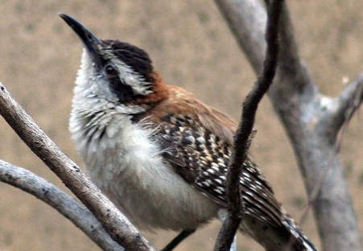

La Guacalchía
(Campylorhynchus capistratus)


El cucarachero dorsirrufo (Campylorhynchus capistratus), también denominado guacalchía guacalchilla, huacalchía, huacalchilla, chocholpía, arrocero y matraca de espalda rufa, es una especie de ave paseriforme de la familia Troglodytidae propia de América Central. Anteriormente se consideraba una subespecie del cucarachero nuquirrufo. Distribución y hábitat: Se extiende por América Central, desde el extremo sur de México hasta Nicaragua y Costa Rica; distribuido también por Guatemala, El Salvador y Honduras. Su hábitat natural principal son las zonas de matorral tropical, aunque también se encuentra en los bosques tropicales montanos y costeros.